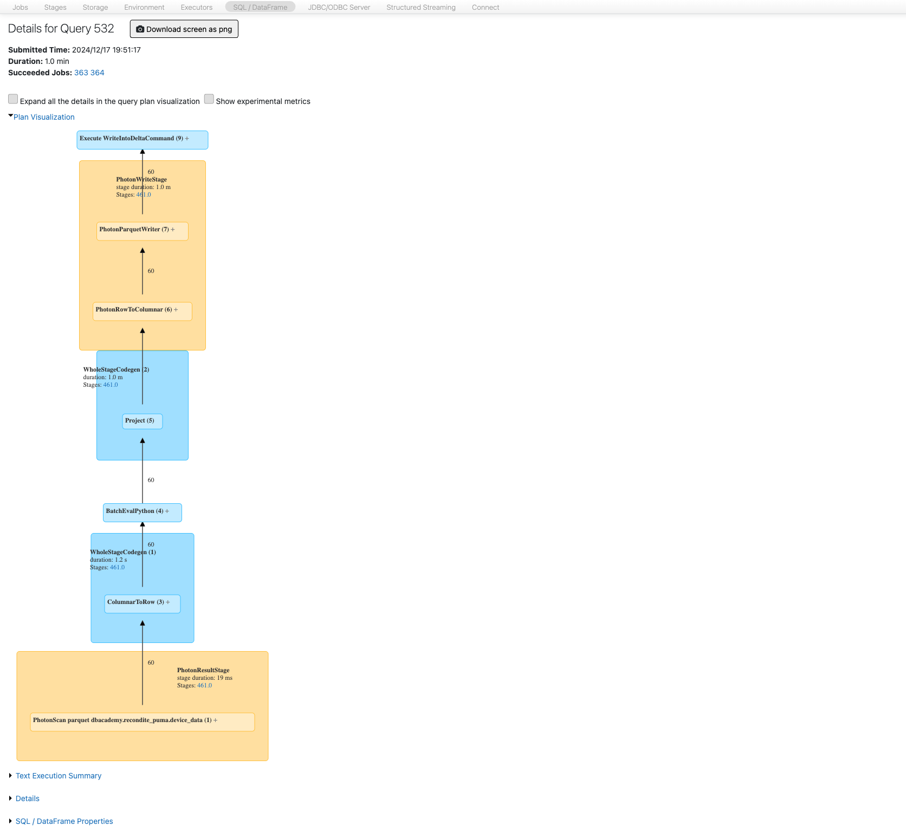

Spark SQL- und DataFrame-Operationen sind hochgradig optimiert – sobald jedoch eine eigene User-Defined Function (UDF) ins Spiel kommt, insbesondere in Python, kann die Performance drastisch einbrechen. Dieses Kapitel erklärt, warum das so ist (Stichwort: Serialisierung), welche Alternativen es gibt und wann UDFs überhaupt sinnvoll sind.
1. Warum Serialisierung ein Performance-Thema ist
Damit eine benutzerdefinierte Funktion überhaupt auf einem verteilten Cluster ausgeführt werden kann, muss sie serialisiert und an jeden Executor im Cluster verteilt werden. Zusätzlich müssen die Parameter und der Rückgabewert der Funktion bei jedem einzelnen Funktionsaufruf – also für jede Zeile der verarbeiteten Daten – konvertiert werden. Dieser Overhead entsteht bei UDFs in jeder unterstützten Sprache, fällt bei Python-UDFs aber am stärksten ins Gewicht:
Der Python-Code muss zunächst gepickelt werden (in ein für Python geeignetes Serialisierungsformat gebracht werden).
Spark muss in jedem Executor einen eigenen Python-Interpreter starten und am Leben erhalten.
Jede einzelne Zeile muss zwischen der JVM (in der die DataFrame-Engine läuft) und dem Python-Prozess hin- und herkonvertiert werden – dieser Overhead summiert sich bei großen Datenmengen erheblich.

Der Datenaustausch zwischen der JVM und dem Python-Interpreter bei klassischen Python-UDFs verursacht pro Zeile zusätzlichen Serialisierungs-Overhead.
2. UDFs als Optimierungsbarriere für Catalyst
Ein zweiter, oft unterschätzter Nachteil: Der Catalyst-Optimizer (siehe Kapitel 06-1) kann den Code vor und nach einer UDF zwar weiterhin optimieren, den Inhalt der UDF selbst jedoch nicht – sie bleibt für Catalyst eine „Black Box“. Damit wird eine UDF innerhalb einer Transformationskette zu einer Analysebarriere, die verhindert, dass Catalyst übergreifende Optimierungen über den gesamten Ausführungsplan hinweg vornehmen kann.
3. Empfehlungen
UDFs möglichst ganz vermeiden. In den allermeisten Fällen lässt sich dieselbe Transformation mit den eingebauten, kontinuierlich optimierten und von der Community weiterentwickelten Spark-SQL-Funktionen (Higher-Order Functions) abbilden. Es lohnt sich, aktiv nach einer eingebauten Alternative zu suchen, bevor eine eigene UDF geschrieben wird.
Wenn Python-UDFs unumgänglich sind (häufig der Fall bei Data-Scientist-Workloads mit bestehendem Python-Code), sollten Vektorisierte UDFs (Pandas UDFs) oder die neueren Apache-Arrow-optimierten Python-UDFs verwendet werden statt klassischer, zeilenweiser Python-UDFs. Beide arbeiten spaltenweise (vektorisiert) statt zeilenweise und reduzieren den Serialisierungs-Overhead erheblich.
Bei Scala-UDFs sollten stattdessen Typed Transformations bevorzugt werden.
Bestehende Business-Logik nicht künstlich über UDFs integrieren. Es lohnt sich fast immer, vorhandene Geschäftslogik direkt in nativen Spark-Code zu portieren, statt sie unverändert in eine UDF zu kapseln.
Ergänzt aus der offiziellen Databricks-Dokumentation: Klassische, zeilenweise Python-UDFs sind mit Abstand am langsamsten. Pandas-UDFs (vektorisiert, über Apache Arrow) können gegenüber zeilenweisen UDFs eine bis zu 100-fache Beschleunigung erzielen. Die neueren, nativen Arrow-optimierten Python-UDFs gehen noch einen Schritt weiter: Sie arbeiten direkt auf dem Arrow-Format, ohne den Umweg über Pandas- oder NumPy-Objekte, und sind dadurch nochmals rund 10 % schneller sowie rund 40 % speichersparender als klassische Pandas-UDFs. Selbst reguläre (nicht-vektorisierte) Python-UDFs profitieren spürbar von Arrow-Optimierung: Sie laufen dann rund 1,6-mal schneller als klassisch gepickelte UDFs, bei verketteten UDF-Aufrufen sogar bis zu 1,9-mal schneller. Aktiviert wird die Arrow-Optimierung für UDFs Session-weit über den Konfigurationsparameter spark.sql.execution.pythonUDF.arrow.enabled.
Quelle: Introducing Arrow UDFs in PySpark – Databricks-Blog
Databricks-Dokumentation (Deutsch) — erstellt aus internem Kursmaterial, ergänzt mit Inhalten der offiziellen Databricks-Dokumentation (docs.databricks.com).